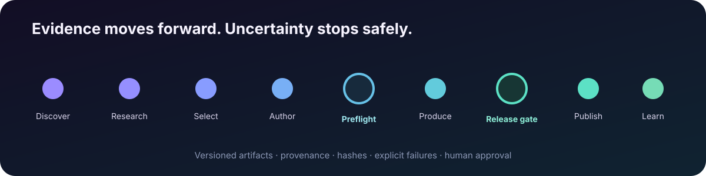

02 / Media production system
Atlas Cowork
A production system that turns research into release-ready media—and stops when the evidence or finished artifact is not good enough.

The problem
Research-driven media is not just a generation problem. Claims need evidence, visuals need rights records, assets fail, renders can be technically invalid, and publishing the wrong artifact is worse than skipping a slot.
Atlas models that work as explicit, inspectable handoffs instead of one opaque “make a video” action.
What I built
- A staged path from topic discovery and research through authoring, rendering, release review, and performance learning
- Structured handoff records with stable statuses, hashes, failure codes, and remediation details
- Source-linked claim inventories and media usage manifests
- Resumable jobs, targeted retries, duplicate-publish protection, and guarded experiments
Key decisions
Gates over optimistic automation
Preproduction checks happen before expensive work. Release checks inspect the encoded output and confirm that it still matches the reviewed package.
Degrade honestly
Missing demand data is recorded as degraded input. Missing evidence or required media stops production; the system does not fill gaps with plausible content.
Keep humans in the policy loop
Performance data can recommend changes, but a recommendation does not silently become production policy.
What I learned
The best automation is not merely fast. It makes failures legible, prevents bad state from moving forward, and gives a person enough evidence to make a confident release decision.
Python · JSON schemas · FFmpeg · local ML · scheduled workers · automated tests